Витрина дизайн-системы бюро Глагол версии 3.0.0 и площадка, на которой
сравниваются три концепции «Глагола 2.0». Краски, типографика и элементы
рабочей среды взяты из настоящих файлов продукта — app/globals.css
и app/work.css, — а не из копий: их вынимает
node lab/build.mjs. Разойтись с продуктом эта страница не может.
Исключение одно, и вот оно. Примитивы components/ui/ — это
React, и в статической странице без сборки они не живут. Здесь они показаны
разметкой на тех же токенах; источником остаётся код. Раскладку в продукте
задают утилиты Tailwind, которых здесь тоже нет, поэтому композиция
разделов и концепций написана своим CSS.
Тринадцать расхождений по кнопкам и типографике разобраны 1 ноября 2026
года. Решения обязательны для новой работы: нового экрана, нового
раздела, нового компонента. Работающие экраны продукта под них не
переписываются — правило целиком в RULES.md, раздел
«Постепенная миграция».
Включается областью применения: data-ds="3" на корне экрана
или блока, слой app/ds3.css действует только внутри. Вне
области не меняется ничего, поэтому старое и новое живут рядом и это не
две дизайн-системы.
Что ниже на этой странице — показ действующих элементов продукта, а не стандарта. Полки раздела 01 сняты с того, что в продукте есть сегодня: кнопка там 13/700 и 36 на любой ширине. По стандарту она 15/600 и 44 на телефоне. Где это расходится — помечено словом «историческое».
Стандарт целиком, собранный и работающий, — на контрольном экране
«Конференция Продукт 2026»: он
помечен data-ds="3" и не содержит ни одного своего значения.
Причины решений и отвергнутые варианты — в review/РЕШЕНИЯ.md.
| Правило стандарта | Где реализовано |
|---|---|
| Кнопка 36 / 44, кегль 15, вес 600 | ds3.css |
| Круглая кнопка 36, просвет 8, шаг касания 44 | ds3.css |
| Лестница кеглей и поле ввода 16 | ds3.css |
| Отклик 0,96 у всего нажимаемого | ds3.css |
| Ссылка подчёркнута всегда | ds3.css |
| Заголовки, подписи, числа, чипы | work.css, без изменений |
| Управление «Править» у раздела | ждёт реализации: вид есть, поведения нет |
| Правка раздела полями на месте | ждёт реализации: нужен компонент |
| Заголовок в липкой шапке служебных экранов | ждёт реализации: приёма в продукте нет |
Три последние строки — честный долг: правила, у которых есть описание и нет кода. Готовыми компонентами они не называются.
Портал несёт оба признака. createPortal и окна
shadcn рисуются в <body> мимо дерева экрана, и слой до
них не достаёт: замер 01.11.2026 дал кнопку 13/700 с браузерной рамкой и
без заливки, а поле — тринадцатым кеглем, на котором iOS зумит страницу.
Корень портала пишется
<div className="work" data-ds="3">; как это выглядит —
отдельным блоком под основным на контрольном экране.
Всё ниже работает в продукте сегодня. Значения не названы числами там, где их держит токен: поменяется токен — поменяется образец.
Семантика, а не названия цветов. Модель — oklch, Tailwind 4. Светлая и тёмная заданы полностью; переключите тему в шапке — поменяются и образцы.
Красного среди действий нет: --destructive живёт в валидации и стектрейсах, а удаление и отмена — персиковые. Красная кнопка пугает сильнее, чем стоит поступок, который всегда можно повторить.
Эти четыре — своё у рабочей среды: в палитре бюро им соответствия нет, они кодируют этап и беду. У каждого цвета один смысл на всю систему; придумывать второй нельзя.
Оранжевый берётся var(--primary), а не числом. В мини-аппе он был прописан значением — ровно то место, где через месяц появился бы третий оранжевый.
Onest на заголовках и числах, Manrope в тексте, оба с кириллическим сабсетом. Плакатный заголовок — Onest 900 заглавными, межстрочный 0.9. Проверять его нужно на Ё и Й: при обрезке первыми пропадают точки и бреве, и «Ё-ТАКСИ» читается как «Е-ТАКСИ». Лечится возвратом роста коробке и отрицательным полем.
Их четыре, и это не лестница одного ряда, а четыре назначения. Сводить к одному числу нельзя: 44 — вообще не про внешний вид.
| Число | Что это | Где |
|---|---|---|
| 36 | высота кнопки на компьютере | .work-btn — main, second, soft, quiet |
| 40 | поле, пилюля, выпадающий список | и кнопка в ряду с полями — .work-btn--row |
| 44 | минимум на телефоне для всего нажимаемого | кнопка, пилюля, поле, пункт меню под 1024 |
| 48 | главное действие на телефоне | .work-shelf-main, под 1024 |
36 и 44 не спорят, потому что это разные среды: 36 —
компьютер, где нажимают курсором, 44 — телефон, где нажимают пальцем. Под
1024 всё нажимаемое поднимается до 44. Внутри одного ряда высоты обязаны
совпадать, и это правило сильнее назначения: кнопка 36 рядом с полями 40 торчит на четыре
пикселя, и ряд перестаёт читаться рядом. Ловится командой — ui-guard,
правило «кнопка в ряду с полями выше самих полей».
Четыре вида, и отклик описан у них, а не у каждого экрана — на этом и держится то, что отклик одинаков везде: фон становится плотнее, не сдвиг и не тень. Пятого вида не заводим. Подпись — в одну строку: не влезает, переписываем текст.
Нативные input type="date" и <select>
запрещены: они рисуют календарь и список операционной системы. В продукте
работают components/booking/date-field.tsx и
select.tsx — это React, здесь показан их вид.
Меню рисуется поверх страницы, закрывается по Escape,
открывается вверх у нижнего края и несёт поле «своё значение» под списком.
Всплывающее из строки списка уходит в конец страницы
(createPortal): внутри списка его накрывали дважды и по разным
причинам.
Четыре обязательства: подсвечивается персиком целиком, открывается нажатием в любое место, тащится мышью за любое место, носит свои действия при себе. На телефоне ручки нет — перетаскивания пальцем в вебе не существует.
Строка не сжимается по нажатию: сжатие — это
transform, а предок с transform забирает себе всё
абсолютное и всё fixed внутри. Выпадашка запиралась среди
соседних строк, окно согласия открывалось внутри строки, цель нажатия
успевала смениться между нажатием и отпусканием. Три жалобы, одна причина.
Место обозначается тремя тихими средствами сразу: нейтральная
подложка, вес 800, оранжевая пиктограмма. Подпись остаётся чёрной — цветной
текст рядом с цветной кнопкой снова даёт два пятна. Вид активного пункта
живёт ровно в одном месте: .work-side-item[aria-current="page"].
Число всегда с подписью: само по себе оно не сообщает
ничего. tabular-nums обязателен — иначе счётчик дёргается при
каждом обновлении, а это тот же скачок, что уехавшая кнопка. Перерасход на
полосе не обрезается, а продолжается за сотню полупрозрачным: иначе полоса
врёт ровно в том случае, ради которого её смотрят. Высота у чипов одна на
всех: разнокалиберные ярлыки в строке выглядят как сбой вёрстки.
Пусто — это фраза словами, а не прочерк: прочерк читается как «данные не подгрузились». «Тренер не назначен», «не оговаривали», «не назначено». Ноль — это утверждение, и ставить его вместо пустоты нельзя.
Приёмы, которые до версии 3.0.0 не были описаны словами —
о них знало только сообщение коммита 09b4980. Все три живут в
app/globals.css и работают здесь, на этой странице.
.reveal — ступенчатое проявление прямых потомков
по 60 мс, кривая cubic-bezier(0.22, 1, 0.36, 1), под
prefers-reduced-motion выключается целиком. Порядок проявления
задаёт порядок чтения. .section-rule — номер оранжевым,
название серым, линия на всю оставшуюся ширину: страница читается как
журнальный разворот, а не как лента карточек. В публичной среде главное
действие тёмное, не оранжевое: оранжевого на экране одна точка.
Снимки живых страниц дизайн-системы, снятые Playwright на 1440 и 375 в той
теме, что выбрана в шапке. Это не макеты: страницы работают на
localhost:3031, снимки пересобирает node lab/shoot.mjs.
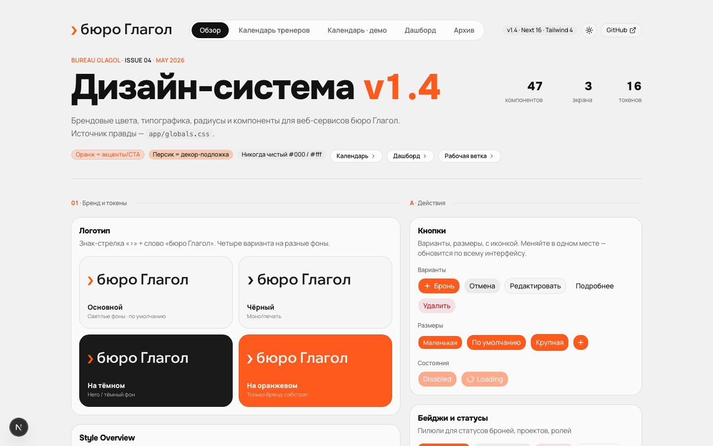
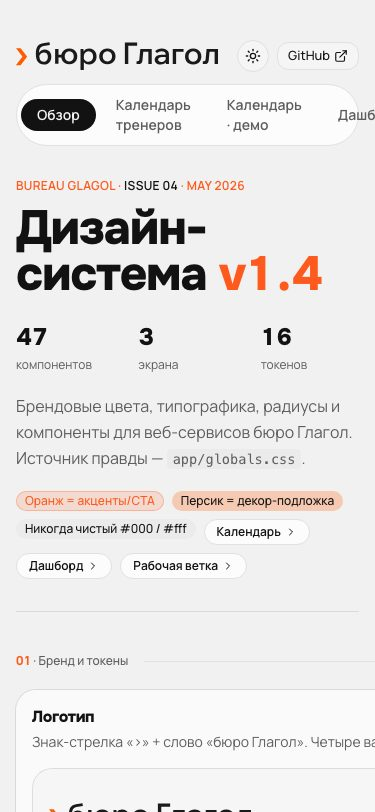
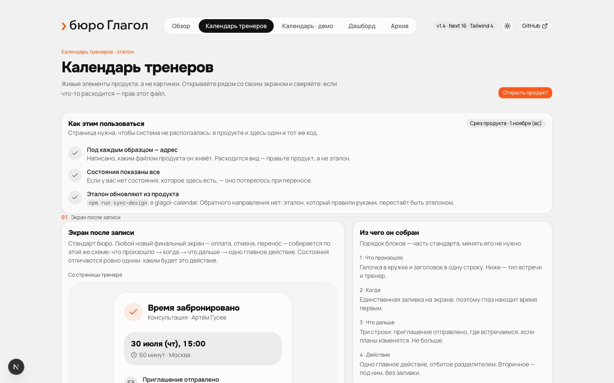
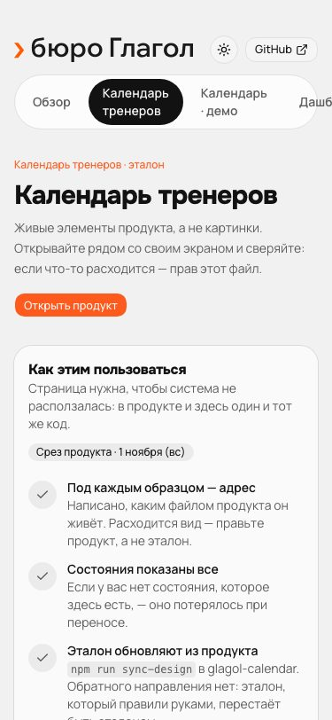
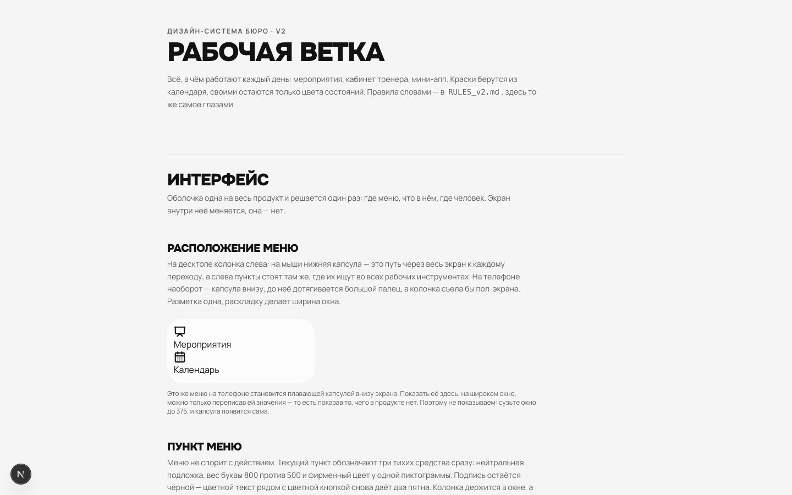
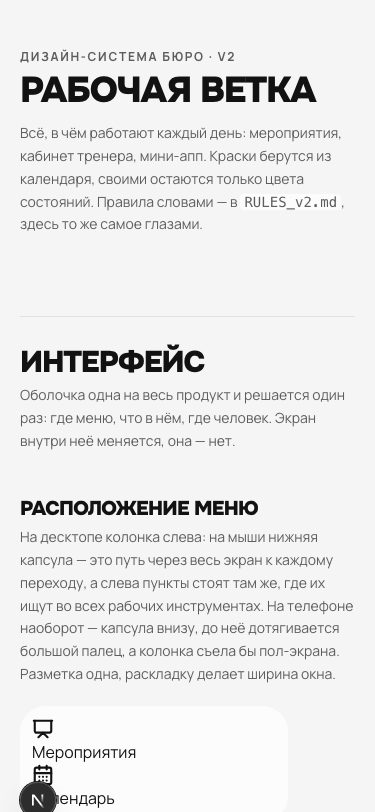
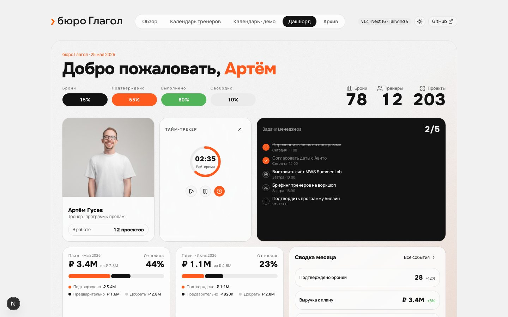
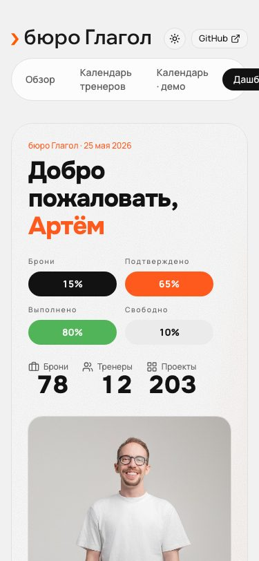
Во всех трёх — одни и те же данные, чтобы сравнивался именно дизайн. Марина Соколова, директор по развитию. Долгосрочная цель: конверсия из выступлений в обращения с 4% до 10% к концу декабря. Ближайшее выступление — конференция «Рост 2026» через 14 дней, доклад на 12 минут. Есть структура доклада, четыре прошлых выступления, разбор от тренера и следующие действия.
Цель и выступление — разные вещи: одна цель собирает несколько выступлений и несколько попыток. Это различие держат все три концепции, и каждая показывает его по-своему.
Шкала цели во всю ширину сверху, под ней разворот «что решить сейчас» и «арифметика цели» на одной базовой линии.
Узнаваемый элемент — шкала с засечками прошлых выступлений: видно не «сколько процентов пути», а чем именно двигали число. Откат виден так же, как рост.
Открыть A →Разворот рукописи: широкая полоса — сам доклад, узкая правая — поля, куда уходит всё, что не текст.
Узнаваемый элемент — вертикальная шкала веса у каждого аргумента, четыре ступени разбора бюро. Отметка стоит на полях, как у корректора.
Открыть B →Одна вертикальная ось: цель сверху горизонтом, выступления — засечками к ней, расстояние пропорционально времени.
Узнаваемый элемент — линия, которая утолщается к цели и залита снизу до достигнутого. Процента нет нигде: число и толщина говорят то же.
Открыть C →Чем отличается от типового SaaS. Нет сетки одинаковых плиток с показателями: на экране одно число-плакат и один список решений. Иерархия даётся кеглем, а не рамками. Как помогает задаче. Эксперт открывает экран между делами на двадцать секунд — ему нужно «что сделать сейчас», а не обзор. Почему лучше очевидного. Дашборд из шести плиток отвечает на вопрос «как дела», которого человек не задавал.
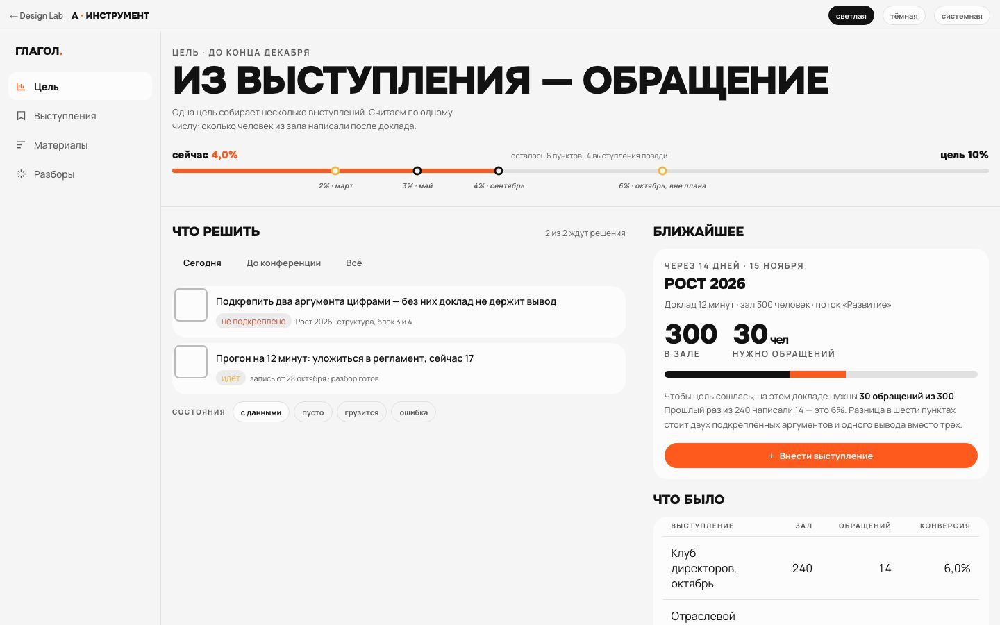
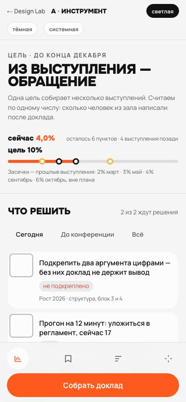
Чем отличается. Это не редактор с панелью инструментов и не чат: инструменты появляются у абзаца, а не над страницей, и тулбара нет вовсе. Как помогает задаче. Человек правит аргументацию, а не управляет проектом; всё, что не текст, должно уйти на поля. Почему лучше очевидного. Обзорные карточки над текстом отбирают у него меру строки — а мера строки здесь и есть рабочий инструмент.
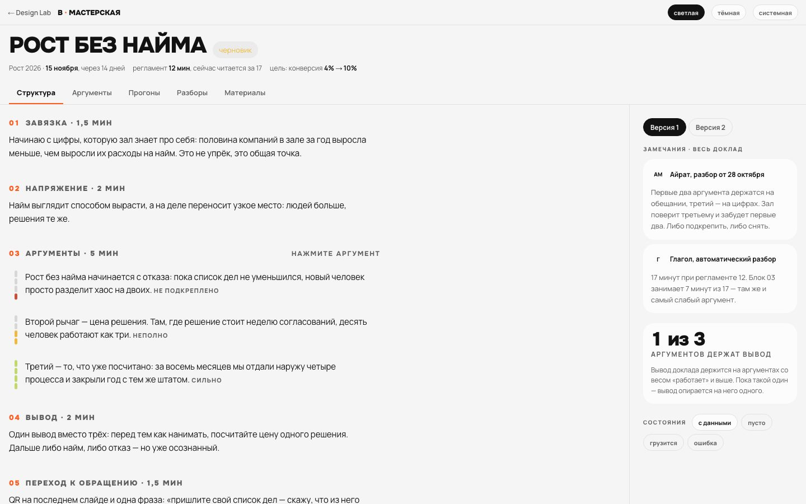
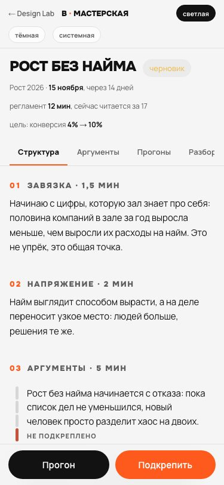
Чем отличается. Нет списка задач и нет канбана: есть путь, у которого видно начало, пройденное и горизонт. Пустые месяцы видны как пустые — расстояние на оси пропорционально времени. Как помогает задаче. Связь «что я делаю сейчас → ради чего» видна геометрически, а не словами. Почему лучше очевидного. Процент выполнения цели — число, которое ничего не советует; ось показывает темп и то, что темп нужно удвоить.
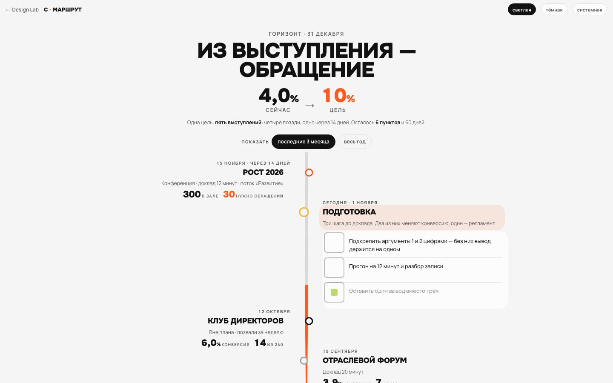
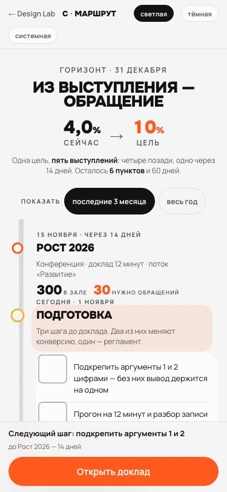
| A · Инструмент | B · Мастерская | C · Маршрут | |
|---|---|---|---|
| Отличительная идея | Шкала цели с засечками выступлений и разворот «решить сейчас / арифметика» | Разворот рукописи: текст в меру строки, всё остальное на полях | Ось времени: цель горизонтом, расстояние пропорционально дням |
| Сильные стороны | Быстрее всех отвечает «что делать сейчас». Высокая плотность без шума. Прямо показывает арифметику цели | Единственная, где настоящая работа — текст — в центре. Вес аргумента даёт честную картину готовности | Единственная, где видна связь цели, прошлого и темпа. Самая узнаваемая: такой оси нет ни у кого |
| Слабые стороны | Самая привычная: рискует выглядеть ещё одной рабочей панелью. Содержание доклада на втором плане | Не отвечает «как дела с целью» — для этого нужен второй экран. Узкая полоса полей на 375 исчезает | Длинная ось требует прокрутки. Слабо держит ежедневную рутину: шагов подготовки больше, чем влезает на засечку |
| Ежедневная работа | Лучше всех: открыл, решил, закрыл | Хорошо в дни подготовки, незачем в остальные | Скорее раз в неделю, чем каждый день |
| Масштабируемость | Высокая: шкала и список принимают любой сценарий, где есть цель и решения | Средняя: приём живёт там, где есть длинный текст | Средняя: ось хороша для пути, но плохо держит сценарии без времени |
| Сложность сопровождения | Низкая: почти всё собрано из существующих приёмов | Средняя: шкала веса и поля — новые элементы системы | Высокая: геометрия оси и масштаб времени — свой код, и его надо держать |
Выбор за Артёмом. Моя рекомендация — ниже, в отчёте сессии; на этой странице она намеренно не стоит, чтобы не подталкивать взгляд.
Каталог, а не склад. Здесь то, что уже оплачено установкой — лежит в зависимостях или в коде бюро, — но не доехало ни до продукта, ни до этой витрины. Новых библиотек в списке нет намеренно: прежде чем ставить что-то ещё, стоит потратить то, что стоит без дела.
Правило отбора: попадает сюда только то, для чего в «Глаголе 2.0» уже виден сценарий. Компонент без сценария — это не возможность, а лишний файл, который через месяц придётся объяснять.
Двадцать классов из сорока трёх не было ни на одной полке
этой витрины. Ниже они живые — это тот же work.css, что
загружен на странице, без единой копии. Приёмам, которые в продукте
занимают весь экран, витрина правит только положение: так же и по
той же причине, что app/rabota/rabota.css.
.work-sheet.work-poster.work-rail.work-phone-sheetНе показаны и остаются в очереди: .work-layer с
лентой страниц (сторисы мини-аппа), .work-solo-* (соло-вид
спикера: постер во весь экран и прокручиваемая карточка под ним),
.work-shell и .work-menu — их видно на снимках
рабочей среды в разделе Б.
Лежит в package.json дизайн-системы и в
components/ui/. В продукте (календаре) из тринадцати
примитивов живут три: аватар, кнопка, переключатель. Остальное —
дамп установщика. Показать эти компоненты живьём на статической странице
нельзя: это React, и без сборки они не работают. Поэтому здесь каталог, а
не образцы — копий не заводим.
| Что | Источник | Что даёт | Где в 2.0 | Решение |
|---|---|---|---|---|
popover, dropdown-menu | radix-ui | всплывающее с позиционированием, фокусом и Escape из коробки | меню действий строки, выбор статуса — сейчас это пишется руками в каждом экране | брать |
tabs | radix-ui | вкладки с клавиатурой и aria | разделы карточки выступления: структура, прогоны, разборы | брать |
progress | radix-ui | доступная полоса со значением | только как основа под .work-bar; вид остаётся наш | позже |
scroll-area | radix-ui | прокрутка без системной полосы | ленты и длинные списки — правило «полос прокрутки не показываем» сейчас держится самим .work | не нужно |
skeleton | shadcn | заглушка той же высоты, что содержимое | везде, где список грузится: правило есть, компонента в продукте нет | брать |
sonner | sonner | всплывающие уведомления стопкой | у бюро уже есть flash-toast в календаре — свой и под наши тексты | не нужно |
drawer | vaul | лист снизу с перетаскиванием | мобильные формы; но .work-phone-sheet уже делает то же без библиотеки | позже |
chart | recharts | графики | история конверсии по выступлениям — но полоса и засечки читаются лучше графика | позже |
calendar | react-day-picker | сетка месяца | у бюро свой month-grid, он синхронизируется между тремя продуктами | не нужно |
carousel | embla | лента с перелистыванием | .work-rail даёт то же на CSS, без веса | не нужно |
command | cmdk | командная строка поиска | файл есть, а cmdk в зависимостях нет — он просто не соберётся | удалить файл |
resizable, input-otp, menubar, breadcrumb, context-menu и ещё 25 | shadcn | — | сценария в «Глаголе 2.0» не видно | не трогать |
Самое ценное — здесь. В календаре 46 своих компонентов,
и по sync-design в дизайн-систему едут семь. Остальные
тридцать девять не описаны, не показаны и при следующей задаче будут
написаны заново. Это не библиотека — это наше, уже проверенное работой.
| Компонент | Что умеет | Где в «Глаголе 2.0» | Решение |
|---|---|---|---|
choice-chips | готовые ответы чипами вместо выпадающего списка | бриф выступления: цель, аудитория, формат | в систему |
steps-bar | этапы полосой сверху, с правилом «не показывать при двух шагах» | подготовка выступления | в систему |
busy-button | спиннер на время отправки, ширина прибита распоркой | любое действие с сервером — прямо следует из правила «ничего не скачет» | в систему |
flash-toast | сообщение после действия, которое уводит на другой экран | сохранили, отправили, записали | в систему |
search-pill | кружок с лупой, раскрывающийся в поле | поиск по выступлениям и материалам | в систему |
leave-guard | вопрос перед уходом с несохранённой формы | везде, где есть форма — правило записано, компонент один | в систему |
brief-layer | второй слой поверх карточки | разбор поверх выступления | рассмотреть |
people-slider | ползунок ступенями, не линейный | размер зала — прямо из сценария цели | рассмотреть |
week-editor | обычная неделя строкой на день | регулярная подготовка | рассмотреть |
recording-player, uploads | плеер записи и загрузка файлов | запись выступления и материалы к нему | рассмотреть |
панель хаба (panel.css) | сворачивающаяся колонка, «лавабл», цели касания | хозяин приёма — хаб; в системе он не описан вовсе | описать |
панель записи в gig-screen.tsx | слой с карточкой: правка на месте, стоимость, встречи, обратная связь | карточка выступления в 2.0 — это она | вынуть |
Последняя строка — главная находка разбора. Самый богатый
приём продукта живёт внутри одного файла на 3700 строк
(app/app/gigs/[id]/gig-screen.tsx): слой с карточкой, где всё
правится на месте — стоимость, встречи, заметки, статусы, обратная связь.
Он не компонент, не в work.css и не в sync-design.
Повторить его в «Глаголе 2.0» будет означать написать заново.
Для полноты: в radix-ui лежат ещё
Accordion, AlertDialog, Collapsible,
ContextMenu, HoverCard, Menubar,
NavigationMenu, RadioGroup, Slider,
Toolbar, Toast и ещё десяток. Ни один из них не
обёрнут и не используется. Брать их «про запас» не нужно: правило бюро —
сперва искать готовое, и готовое у нас своё. Из иконок
lucide-react в календаре живут 62 штуки — этого хватает,
второго набора не заводим.
Glagol Design Lab · v3.0.0. Версия системы — поле version
в package.json дизайн-системы. Правила: RULES.md,
docs/DESIGN.md, docs/COMPONENTS.md,
docs/ADAPTIVE.md, docs/CHECKS.md. Что изменилось в
3.0.0 и какие противоречия устранены — CHANGELOG.md.
Концепции — экспериментальные. Их композиционные приёмы и токены живут только здесь и системные не замещают. Переносить что-либо из них в рабочий интерфейс до выбора направления нельзя.
Данные на всех экранах синтетические. Настоящих людей, клиентов, встреч и закрытых методик здесь нет.